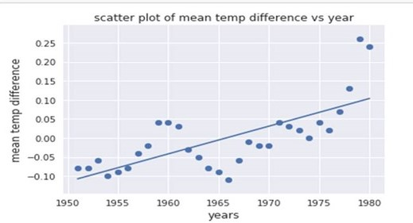
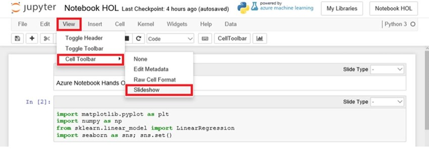
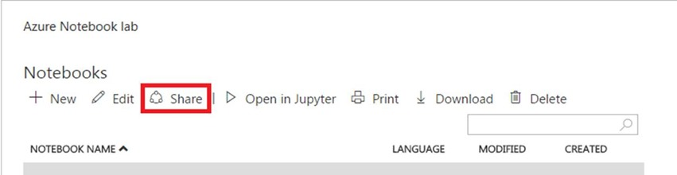

In today’s blog I will be sharing my experience of using Azure/Jupyter notebooks to visualize climate data. But what exactly is a Jupyter notebook?
“A Jupyter/Azure Notebook is an open-source web application that allows you to create and share documents that contain live code, equations, visualizations and narrative text”. In practice what this allows is to be able to run code online and at the same time have normal text and document type attachments alongside it. This is very convenient for all types of enthusiasts and professionals alike.
Do you think it takes an expert to go through all this? Well let’s just say that in less than 45’ you can become an expert yourself.
All we need to set up is a Microsoft account so if you do not have one please create one to proceed. You can do
so at: "https://account.microsoft.com/account". Having that
set up all you need to do now is to log
into Azure Notebooks "https://notebooks.azure.com".
Finally you also need to download the resource files that we are going to be using. You can do so by downloading
the zip file here
The lab in itself was fairly short and self-explanatory in its instructions so the main focus will be on the more
interesting, discussion-friendly bits.
After we set up our Notebook as instructed we select our programming language as Python 3.5.
Python is what we call a high-level programming language and its main advantage is that it has quite a natural
syntax writing (the equivalent of grammar in programming). Hence this makes it quite easy to understand
especially for someone with no programming experience.
As in everything in real life when we want to build something, we need our toolbox. In programming those our
called libraries. Libraries provide certain functions (our tools if you like) in order to make the process of
achieving our goal easier. As such we don’t have to reinvent the wheel!
Hence we start of by importing the libraries we will be using in this laboratory.
import matplotlib.pyplot as plt
import numpy as np
from sklearn.linear_model import LinearRegression
import seaborn as sns; sns.set()
These are:
#Import Data
yearsBase, meanBase = np.loadtxt('5-year-mean-1951-1980.csv', delimiter=',', usecols=(0, 1), unpack=True)
years, mean = np.loadtxt('5-year-mean-1882-2014.csv', delimiter=',', usecols=(0, 1), unpack=True)
#Create a Scatter plot
plt.scatter(yearsBase, meanBase)
plt.title('scatter plot of mean temp difference vs year')
plt.xlabel('years', fontsize=12)
plt.ylabel('mean temp difference', fontsize=12);
plt.show()
Now that we have our scatter plot we need to analyse the data. A very useful property used extensively for predictive modelling is that of curve fitting. This is a method by which we try and identify a trend matching a specific profile. In this lab we are implementing a linear regression fit in three different ways.
This method uses the matplotlib library to fit a line on the scatter plot data. This is done by first calling the polyfit() function which fits a polynomial curve (here is 1 as specified in the parameter) to the data. Also, in order to draw the line seen on the plot we do have to declare a separate “line function”.
# Creates a linear regression from the data points
m,b = np.polyfit(yearsBase, meanBase, 1)
# This is a simple y = mx + b line function
def f(x):
return m*x + b
# This generates the same scatter plot as before, but adds a line plot using the function above
plt.scatter(yearsBase, meanBase)
plt.plot(yearsBase, f(yearsBase))
plt.title('scatter plot of mean temp difference vs year')
plt.xlabel('years', fontsize=12)
plt.ylabel('mean temp difference', fontsize=12);
plt.show()
# Prints text to the screen showing the computed values of m and b
print(' y = {0} * x + {1}'.format(m, b))
plt.show()
Hence, we can see how matplotlib data fitting can be used in generally simple cases rather than very complex ones. It is still a very powerful tool to use though.

# Pick the Linear Regression model and instantiate it
model = LinearRegression(fit_intercept=True)
# Fit/build the model
model.fit(yearsBase[:, np.newaxis], meanBase)
mean_predicted = model.predict(yearsBase[:, np.newaxis])
# Generate a plot like the one in the previous exercise
plt.scatter(yearsBase, meanBase)
plt.plot(yearsBase, mean_predicted)
plt.title('scatter plot of mean temp difference vs year')
plt.xlabel('years', fontsize=12)
plt.ylabel('mean temp difference', fontsize=12);
plt.show()
print(' y = {0} * x + {1}'.format(model.coef_[0], model.intercept_))
The advantage of scikit-learn is that it contains different models of data fitting which are usually convenient to use. This is done using the power of Machine Learning which is built into the library itself.In this example since we wanted a linear fit we imported just the linear model. As such the code is pretty simple comprising of less function calls than the matplotlib example. As such one can see how scikit-learn can be applied to data analysis more universally and more easily than matplotlib concerning more complex case. As it was expected the result is exactly the same as the previous one.
plt.scatter(years, mean)
plt.title('scatter plot of mean temp difference vs year')
plt.xlabel('years', fontsize=12)
plt.ylabel('mean temp difference', fontsize=12);
sns.regplot(yearsBase, meanBase)
plt.show()
Seaborn is an open source library specific to statistical visualization. Hence Seaborn provides very high performance as conveniently as possible. This can easily be seen from the little amount of code needed to do the same thing as on the previous two methods. A projection area was also added to show where points are expected to lie around this linear regression.
An important aspect of the Microsoft Azure environment and the Microsoft philosophy is the aspect of collaboration. In today’s fast changing world collaboration helps us move forward. In order to reflect that Azure Notebooks has the functionality of converting your notebook to an easily shareable link or a presentation if needed. This is done very easily by clicking at the following:
And then setting each cell to be either a Fragment (Code) or a Slide (Text). Clicking slideshow after having done that will start a slide show of your notebook. This is very convenient for professional presentation which involved the use of such technologies.
Additionally, you can also as mentioned share the notebook with your peers and/or collaborators by clicking the share button at the notebooks page.

This lab exercise was a very nice experience as it highlights the core principles we all as software enthusiasts
and hobbyists share:
Principle 1: There are always many different approaches and solutions to each
problem. This was demonstrated by
all the different methods that we used to create the line regression for the scatter plot.
This is a core principle as it shows that different people come up with different solutions and it the goal is
for each one to improve and discuss with one another to find the best one.
Principle 2: Leading from the last principle in order to achieve the goal of
finding the best solution there is
a need for people to collaborate and exchange their ideas with their peers. Different people with different
experiences think about a problem in the different way and contribute in their own unique way towards the
solution. As such collaboration and teamwork are very crucial values for todays professional environment.
Microsoft has been committed to that idea and encourages collaboration and the exchange of ideas through its
ease of sharing as demonstrated in the laboratory with Azure Notebooks.
Finally, I hope that the skills cultivated in this lab gave you the eagerness to explore more in the world of
machine learning and Python programming as the applications are endless. As such here are some interesting
projects to undergo:
Suggested Project 1:
Create a model to predict the trend of a stock price over a month and compare the performance of different
models.
Suggested Project 2:
Create a Jupyter Notebook application to investigate how population is changing over the years in developed v
developing countries.
Got a project idea of your own? Definitely do that! Do not feel restricted to those projects pursue your
curiosity and embrace it. Please feel free to share with the rest of the community!
I hope that you fellow life-learner have finished this blog feeling empowered and ready to take a new challenge
even harder than the one just completed. As such I would like to say a very big thank you for reading my blog
and I really hope to see you back on my next one!
This is the link to my completed library: . Also feel free to check other
awesome labs at https://github.com/Microsoft/computerscience/blob/master/Labs/AI%20and%20Machine%20Learning/Azure%20Notebooks/Azure%20Notebooks.md
Lots of engineering love,
Theo
[1] "Web App Service - Microsoft Azure". Microsoft.
[2] "Microsoft Azure Machine Learning combines power of comprehensive machine learning with benefits of cloud".
blogs.microsoft.com. June 16, 2014.